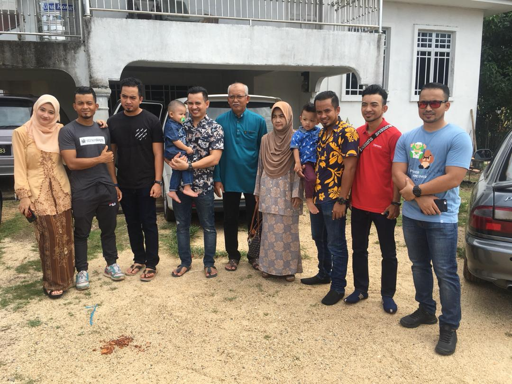

♥ My beautiful Family ♥
_____________________________________________________________________
♥ My Parents ♥
This is the king and queen of my heart. Lets get started with my dad first! My dad is Nazmi Bin Daud.
He was born in Jerteh, Terengganu on 15th March 1957. This year he is already 63 years old. Once before, he work at National Registration Department.
He got early education at Sekolah Kebangsaan Tengku Mahmud then Sekolah Menengah Kebangsaan Tengku Mahmud which is a high prestige school. I admire
my dad because he has a lot of knowledge. He is quite knowledgeable in terms of the country and other matters. Furthermore, he is really love outdoor
activities. When I was kid he always took me to the rivers and beaches so that I can learn how to swim and be tough even though I was a girl. He taught
me a lot to be independent just like him. Lets back to my mom. My mom is Anisah Binti Jusoh. She was born in Kota Bharu, Kelantan on 26th Februari 1960.
She is 61 years old this year. My mom is a housewife. My mom is such a wonderful woman because she gave birth to me and my other 8 siblings. She got early
education at Sekolah Kebangsaan Mulong then Sekolah Menengah Kebangsaan Mulong. In 2013, my mom was diagnosed with canser servic. But grateful that she is
okay after the operation. I cannot imagine my life without my mom and dad. They are my happiness, my strength and my everything. ♥
_____________________________________________________________________
♡ My Siblings ♡

To be honest have 10 siblings. But the youngest one is from another mother. He is same batch with me which 21 years old. My siblings name are so unique.
Whenever people heard our name, they will think and ask if our name misspelled.
My siblings name are ☟
NORAIN
NOE ERNA
NOE ERMAN
NOE EZLAN
NOE EZWAN
NOE EZRAN
NOE EZHAN
NOE EZRUL
NOE ERNI
NOR FAIZZAN
______________________________________________________________________
Copyright © 2020 by Noe Erni